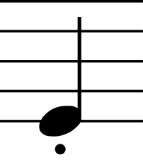

Tango: Staccato vs. Legato
30 November 2016
Tango is known as a sharp dance, with quick, explosively powerful movements and no Swing or Sway. However, more than anything else, Tango is a dance of contrast, and there is no better way to show contrast than in the interpretation of the music. Sometimes it is better to dance fast and precisely, while other times it is better to dance calmly and smoothly. This article will introduce you to the different interpretations of Tango music, staccato and legato, and help you understand how and when to use them.
Staccato
Staccato is a musical term, which means disconnected in Italian. It is used to indicate that notes are taken sharply, with a pause between each note. Clap your hands to a beat, and you will notice that if you clap once per second, unless there is an echo in the room, the majority of each second is comprised of silence, with your clap only taking up an instant. This is staccato - the claps are the notes, and in between each note there is a distinct pause. Listen to this Tango song, and hear the staccato melody.
Staccato is expressed in dancing mainly in the use of the feet. When dancing a figure and using a staccato action, your foot should be placed quickly, and then left unmoved for the rest of the beat until it is time to move again, at which point it should speedily move to the next step, spending as long as possible planted firmly on the ground and not moving. Here, the movement of the foot is like the sound of your clap: it is instantaneous; while the foot remaining on the floor while the body moves above it is like the pause in between each clap. Staccato is also expressed in dancing in the movement of the upper body, such as sharply going from Closed to Promenade Position, as is so characteristic of Tango. Here, too, the movement should happen in the blink of an eye, and there should be no activity in the upper body after the initial action.
Staccato is the traditional way to dance Tango, since Tango music is traditionally staccato, and you should be able to perform every figure with a staccato action.
Legato
Legato means bound together in Italian. This term is used to indicate that there is no pause between notes, and one note flows into the next. It is impossible to clap with a legato action, but singing and musical instruments, which are capable of making drawn out sounds, use legato all the time. If you are singing la dee da dee da, you are probably singing in legato. To sing that in staccato would be weird, inserting a sharp pause after each note. Listen to this Tango song, and hear that just about everything other than the percussion is legato.
When legato is used in the feet, they move more as they do in the other dances, without so much care as to place them sharply. Sometimes the foot can even reach and slide on the floor when using a legato action, as opposed to being strongly placed as in the traditional staccato technique. Legato can also be expressed in the upper body. Sometimes a slow change from Closed Position to Promenade Position is used, for example, but upper body legato can be used in any figure.
See the Difference
Look at this video of Victor and Anastasia, Professional Ballroom World Finalists, dancing their Tango. First, notice the music. What parts of the music are staccato, and what parts are legato? Sometimes there can be staccato in the background and legato in the foreground, or vice versa. From there, notice what parts of their dancing use a staccato action and what parts a legato action.
You should have noticed that the first thing they do after making connection is turn to Promenade Position with a legato action, after which they immediately start to travel in Promenade Position with very staccato foot action. Then, when they begin pivotting around each other, their movement becomes very smooth and legato once again. I won't go through the whole video, but it would be a good idea for you to.
When to Use What
Mix it Up
When you use a staccato action versus a legato action is entirely up to you, but you should always try to mix it up. If you dance your entire routine staccato, it gets boring, and likewise if you dance it legato. Instead, you should dance as Victor and Anastasia did in the video above, and switch between them regularly. As long as you do this, whichever you choose for any particular figure is the right choice. Let's take the following routine:
| Commence in PP, ready to move down LOD | |
| Natural Twist Turn | SQQSQQ |
| Closed Promenade | SQQS |
| Progressive Link |
You could dance this routine where you move with a strong staccato action at the beginning, and then use a legato action to turn to Promenade Position at the end of the Twist Turn, then continue to use a legato action on the Closed Promenade, and the finish with a sharp, staccato Progressive Link. You could also do the complete opposite, and use a legato action at the beginning of the Natural Twist Turn, surprising the audience with a staccato action to end in Promenade Position, then use a basic, clean, and sharp staccato action on the Closed Promenade, and take your time to get into Promenade Position with a legato Progressive Link.
There is no wrong choice, unless you continue to make the same choice over and over. As a general rule, you should try not to use the same sort of action for more than two bars straight (four slows, or eight quicks), however, there may come a time when it is okay to do that, and only experience will tell you when that time has come.
Contrast
Imagine you are watching a play from a high balcony seat, and you see 99 people on stage standing still, and one person moving frantically. Your eye will immediately be pulled to that one person, and the others will fade out of your mind. The same is true of your Tango, in that if you are dancing a long legato section, then a quick staccato action, followed by more legato, that one instance of staccato will stand out and be very powerful.
However, the reverse is also true. If you were watching those same 100 people, yet this time 99 of them were moving frantically while one of them stood perfectly still in the middle, your eye would now be drawn to that one stationary performer. In this same way, a legato action surrounded by staccato can be just as powerful as a staccato action surrounded by legato.
Follow the Music
Another great way to decide whether to do a staccato action or a legato action is to follow the music. If you have been dancing for more than a few years, you have probably come to learn the tunes of some of the more popular dance songs that you hear again and again at parties and competitions. Use this to your advantage. If you know that there is a legato part coming up in the song, be prepared to dance your routine to match it. Likewise, if you know a strong highlight is coming, be prepared to dance a staccato action there.
Never Use a Staccato Movement
The last thing to know about staccato and legato is that your movement around the floor should never be staccato, even if your feet are. Think of it like walking down the street: although your feet may strike the ground and stay, you don't want to look like Frankenstein's Monster, taking jerky steps everywhere you go. The same is true of Tango. Even though your feet may strike the floor abruptly, you don't want to have jerky movement as you progress down the floor. If you are dancing a figure like a Progressive Link, a Drop Oversway, or the very last step of the Natural Twist Turn, you aren't really moving around the floor, so it is okay for your entire body to stop moving for a second, but with more progressive figures such as the Open Reverse Turn, the Fallaway Reverse & Slip Pivot, and the Rock Turn, you may choose to use staccato in the feet and in the frame, but don't let it make your movement jerky. It is a developed skill to be able to move the feet with a staccato action, yet keep the body gliding down the floor, but it is one you must master to become a great dancer.
As an exercise, practice every figure in your routine as staccato, and then go back and do it again as legato. Once you feel comfortable with them, dance your routine, deciding as you go whether your next figure will be staccato or legato. This will give the Man practice in leading and interpreting the music, and the Lady practice in following.